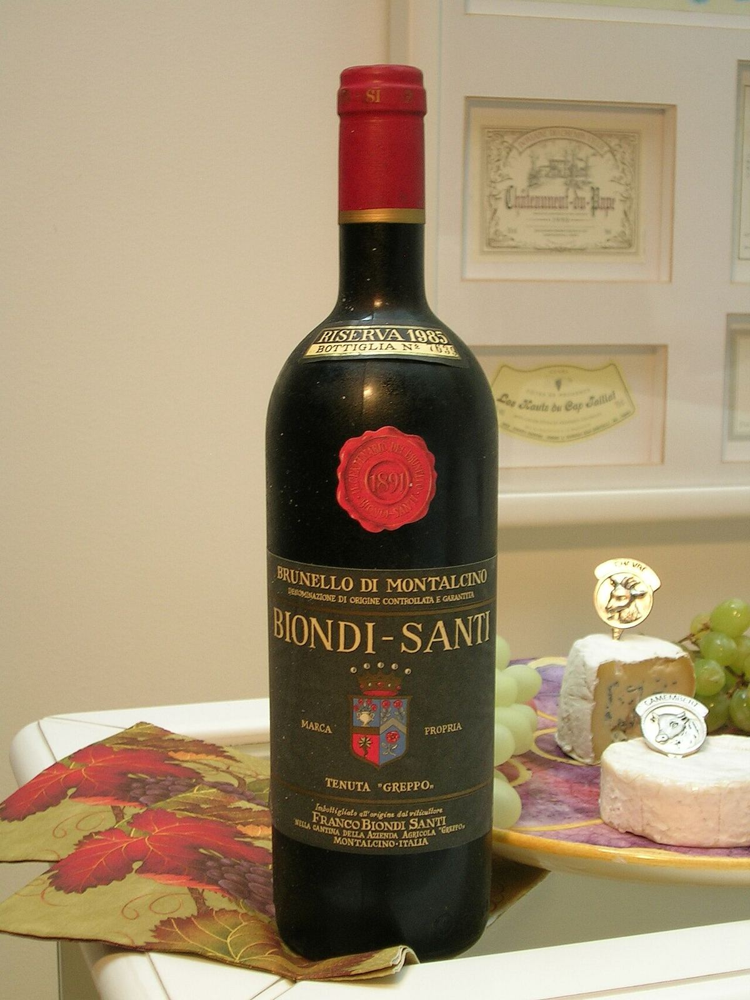

TINTO
El Brunello di Montalcino es un tinto de Sangiovese 100 % elaborado en el municipio de Montalcino, en la provincia de Siena. Es conocido por su larga crianza obligatoria y por su capacidad de envejecimiento.

En Montalcino, el nombre Brunello designaba localmente a la Sangiovese. En la segunda mitad del siglo XIX la familia Biondi-Santi, y en particular Ferruccio Biondi-Santi, seleccionó esta variedad en su finca Il Greppo y elaboró un tinto de Sangiovese en pureza destinado a una larga crianza, en una época en que en la zona era más conocido el Moscadello, un blanco dulce. Durante buena parte del siglo XX el Brunello fue una producción pequeña, en manos de pocas fincas. La denominación obtuvo la DOC en 1966 y, en 1980, fue una de las primeras DOCG de Italia. En 1967 se constituyó el consorcio de productores. A partir de los años setenta y ochenta la llegada de nuevas bodegas amplió mucho la superficie de viñedo y la proyección internacional del vino.
La zona coincide con el término municipal de Montalcino, una colina con el pueblo en lo alto, delimitada por los valles de los ríos Orcia, Asso y Ombrone. Al sudeste, el macizo del Monte Amiata ofrece protección frente a tormentas y granizo, y la proximidad relativa del mar Tirreno aporta influencia mediterránea. El clima es más cálido y seco que en el Chianti Classico, aunque varía entre las laderas del norte, más frescas, y las del sur, más cálidas y soleadas.
Los suelos son muy diversos: en las zonas altas abundan el galestro y las margas calcáreas, mientras que a menor altitud aparecen suelos más arcillosos y arenosos, con depósitos aluviales en los valles. Esta variedad, junto con la altitud y la orientación, explica las diferencias de estilo entre las distintas vertientes.
El Brunello se elabora exclusivamente con Sangiovese y debe criarse al menos dos años en madera. No puede salir al mercado antes del 1 de enero del quinto año posterior a la vendimia, y en el caso de la Riserva del sexto año. Para los vinos de Sangiovese de consumo más temprano existe la DOC Rosso di Montalcino, y la zona cuenta también con las DOC Sant'Antimo y Moscadello di Montalcino.
El Brunello suele presentar color rubí o granate, aromas de cereza madura, ciruela, hierbas aromáticas, cuero y especias, y una boca con acidez marcada, taninos firmes y estructura para evolucionar durante muchos años en botella. Con la edad aparecen notas de sotobosque, tabaco y especias dulces.
